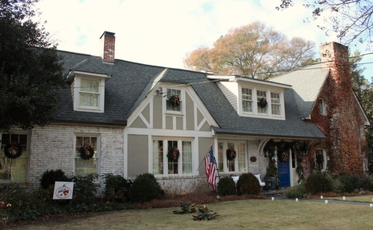
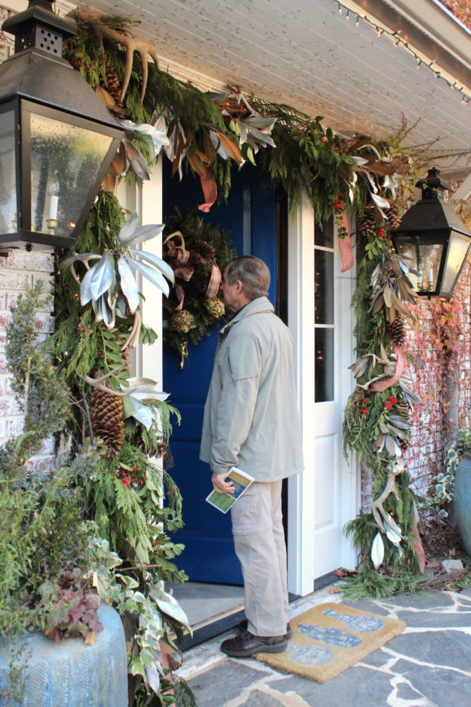

.png)
.PNG)
.PNG)
.PNG)
.PNG)
.PNG)
.JPG)
.JPG)
.PNG)
.PNG)


We interrupt our regularly scheduled home Christmas tour today to bring you an absolutely stunning one! As you probably already know, Mary Kay Andrews is the pen name for the New York Times bestselling author Kathy Hogan Trocheck. Besides being a writer of hilarious novels, she and her talented engineer husband, Tom, have renovated and decorated a number of historic homes. We stayed at Ebbtide, one of their two amazing Tybee Island homes, a few years ago. (You can see my posts about it here, here, and here. 🙂 ) A few weeks ago I read that the Trocheck’s Atlanta home was going to be on the Avondale Estates’ annual Christmas tour, and I knew I had to see it. So my husband and I drove the two hours to Atlanta for the tour on Sunday.
The Trochecks have lived in 3 different homes in Avondale Estates and have only been in this one since 2014. Built in 1926, this 3700 square foot one was renovated by the previous owners in 2008 and further remodeled by the Trochecks this year. Squirrel Hollow, as they call it, has 4 bedrooms and 3 baths (and much much more!)
There’s my ever patient husband standing at their blue front door.

Kathy calls her Christmas style “Ralph Lauren trapped in a 1950’s Woolworth’s department store,” and that is definitely the feel you get as you walk into the Trocheck’s entry hall. You immediately notice the pieces of the blue and white she collects, all that wonderful greenery, (from their yard!) and that tablecover.

She made the patchwork tablecloth from 6 vintage wool stadium blankets that were pretty worn out, and she claims her sewing skills are not too hot, but I think they must be pretty darn good to make that. Don’t you? There is an awful lot going on in this tableau so I will give you a minute to study all the details. 🙂

I loved the brick walls in the entryway, and you can see more of her blue and white pieces there.

She calls this small tree their “Shoemaker tree.” (I hope that is the correct spelling…Schumacher?) A friend of the Trochecks makes brass ornaments, and they have been collecting them and hanging them on their tree for 20 years.

The beautiful dining room is to the left of the entryway.

She found the table and chairs at Scott’s Antique Market in Atlanta
(one of her favorite places to hunt for treasures.)

The dining room table centerpiece is made from $5 estate sale faux pheasants mixed with more greenery from their yard. The Blue Willow plates sit atop plaid chargers from Michaels.
 And then there is that fabulous “great wall of china” surrounding the even more fabulous mirror.
And then there is that fabulous “great wall of china” surrounding the even more fabulous mirror.

Santa was another find from an estate sale.
(She seriously needs to lead shopping expeditions! 🙂 )
 Her snowman collection is displayed in an antique secretary in the corner to the left of the fireplace.
Her snowman collection is displayed in an antique secretary in the corner to the left of the fireplace.
 And all the vintage Santa’s and pixie elves are hanging out in a built-in between the dining room and kitchen – along with a few pieces of estate sale white ironstone. (Who would have thought to display Santa and his elves in soup tureens??! 🙂 )
And all the vintage Santa’s and pixie elves are hanging out in a built-in between the dining room and kitchen – along with a few pieces of estate sale white ironstone. (Who would have thought to display Santa and his elves in soup tureens??! 🙂 )
 And now to the kitchen of my dreams. Oh how I loved it! They remodeled and enlarged this kitchen 3-4 months ago. It was formerly a galley kitchen, and the area below was previously the breakfast area (I think.) You can see the wonderful Viking range there with the antique corbels above it.
And now to the kitchen of my dreams. Oh how I loved it! They remodeled and enlarged this kitchen 3-4 months ago. It was formerly a galley kitchen, and the area below was previously the breakfast area (I think.) You can see the wonderful Viking range there with the antique corbels above it.
 Beautiful plate rack between the absolutely perfect-for-the-space drapes…
Beautiful plate rack between the absolutely perfect-for-the-space drapes…
 I believe this next photo is where the original galley kitchen was. The cabinet doors below the glass canisters open to reveal their dog crates. (Clever!)
I believe this next photo is where the original galley kitchen was. The cabinet doors below the glass canisters open to reveal their dog crates. (Clever!)
 The shelves hold a collection of cake stands and pottery, while antique postcards, picked up at the Chelsea Flea Market on a recent New York City trip, are strung across on twine and held in place with red clothespins. Too cute!
The shelves hold a collection of cake stands and pottery, while antique postcards, picked up at the Chelsea Flea Market on a recent New York City trip, are strung across on twine and held in place with red clothespins. Too cute!
 This beautiful Welsh cupboard is in the other part of the kitchen behind the barstools. Holding Kathy’s large assortment of bottle brush trees, the piece was an anniversary present the Trochecks gave themselves one year.
This beautiful Welsh cupboard is in the other part of the kitchen behind the barstools. Holding Kathy’s large assortment of bottle brush trees, the piece was an anniversary present the Trochecks gave themselves one year.
 Before the remodel, there was a pass thru between the kitchen and the dining room. That area is now the new butler’s pantry.
Before the remodel, there was a pass thru between the kitchen and the dining room. That area is now the new butler’s pantry.
 The cabinets on the right open to a refrigerator, and there is also an ice-maker located behind another door.
The cabinets on the right open to a refrigerator, and there is also an ice-maker located behind another door.

The last room on today’s tour is the breakfast room…all set for Santa’s arrival. 🙂

Vintage Christmas linens, vintage Santa mugs, and Rudolph cookies she baked the morning of the tour complete the table setting. (Love those ticking stripe chair slips!)
 A few years ago Rhoda from the popular blog, Southern Hospitality, toured the Trocheck’s previous Avondale Estates home decorated for Christmas and featured a post on it. It is one of my all time favorites on her blog, and you can read it here. It is so fun to see and compare how furniture and accessories are used again when families move into different homes. As we were touring on Sunday, guess who I ran into…
A few years ago Rhoda from the popular blog, Southern Hospitality, toured the Trocheck’s previous Avondale Estates home decorated for Christmas and featured a post on it. It is one of my all time favorites on her blog, and you can read it here. It is so fun to see and compare how furniture and accessories are used again when families move into different homes. As we were touring on Sunday, guess who I ran into…

Yes, Rhoda was there! (And she looks even more young in person than she appears on her blog!) On Friday, she will be featuring photos she took of this year’s tour. So I know you will want to check those out as well! 🙂
I also ran into this pretty lady while we were there….
 Mary Kay Andrews herself! Good picture of Kathy (aka Mary Kay Andrews)..awful of me! 🙁 We were discussing our engineer husbands, and I was about to fall in a box of bags beside her! Anyway, she is sooo friendly, down to earth, talented, and generous. It takes a lot to open your home to bus loads of strangers…not to mention all the work that has to be done ahead of time. I can’t wait to show you more of her gorgeous home this week! But in the meantime, I have a Christmas giveaway for you to thank you for reading here at Talk of the House. I hope you are going to love it.
Mary Kay Andrews herself! Good picture of Kathy (aka Mary Kay Andrews)..awful of me! 🙁 We were discussing our engineer husbands, and I was about to fall in a box of bags beside her! Anyway, she is sooo friendly, down to earth, talented, and generous. It takes a lot to open your home to bus loads of strangers…not to mention all the work that has to be done ahead of time. I can’t wait to show you more of her gorgeous home this week! But in the meantime, I have a Christmas giveaway for you to thank you for reading here at Talk of the House. I hope you are going to love it.

There are two Mary Kay Andrews fun Christmas books to keep you lighthearted if you happen to get stressed out this season (and they just happen to be signed by the author! 🙂 )

(An Amazon Affiliate link)
and

(An Amazon Affiliate link)
I’ve included this new novella from friend and author, Barbara Hinske. You are going to just love it as I did! It is a super sweet story set in the 1950’s that pulls together the lives of a number of strangers when one of the characters loses her Christmas money as she comes out of her bank. The kindness of strangers throughout the book will certainly give you a warm feeling and fill you with the Christmas spirit.

(An Amazon Affiliate link)
There is also my favorite cookbook from our best local cookbook writer, Nelle Shelton. (James Farmer has nothing on Miss Nelle!) You can see my posts on her Red Velvet cake here and her delicious Caramel cake here. This is my most frequently used cookbook.

And finally, I am including a copy of the children’s book, Red Ranger Came Calling, part of the inspiration of my Christmas decorating in our sons’ room this year. Something for everyone. 🙂

(An Amazon Affiliate link)
To enter, simply leave a comment on any post (on the website – not an email reply to it) that publishes between 12/12/16 and 11:59 p.m. on Sunday, 12/18/16. You may leave a comment on all the posts that publish in that time frame for more chances to win, but please leave only one comment per post. I will do a random drawing after the close of the contest and announce the winner in the next post that publishes after that date.
Thank you for coming along on this part of the Christmas tour today. There will be more in a few days…lots more! I hope you will leave a comment to enter the giveaway. To make it easy, and in honor of Kathy Trocheck’s Christmas tour, I will leave you with a question (or two) to get you started…
Do you collect anything? (Do not answer dust. 🙂 ) And, if you could start a collection of any item, what would you like it to be?
Looking forward to hearing from you!
Until next time….


.PNG)
What a beautiful home. I collect cork top bottles and crock, which at Christmas I fill with cedar greens. Merry Christmas!
Oh, I loved this tour! The way she worked in her blue and white collection with the plaid and Christmas red was beautiful! Thank you for sharing!
Thank you for always posting all the beautiful and creative things you see and do,
Merry Christmas!
Thanks for posting awesome blogs. Everyday I come home from work hoping there is a new one posted to read while unwinding. Each one I usually find several ideas to add to my wish list. I collect santas,and Mary Andrews showed some great ideas how to display This has now made think about collecting ironstone. WIshing you and your family a Merry Christmas
So enjoyed this post. Love seeing creativity in action.
Thank you for sharing such a lovely home! It’s great fun to see how others decorate for Christmas! I especially love all the reds and blues in this home. I’ve just found your blog and am enjoying it a great deal!
Wow, what a gorgeous home and lucky you to have the opportunity to tour it. Love very part of it and especially all the blue and white. Very cheerful and so pretty. Thanks for the virtual tour. I have pinned quite a few of the rooms. Merry Christmas! Jill (Sacramento, CA)
Always look forward to opening your email to see where it will take me that day. Your emails are one thing I never delete.
I love Kathy’s home tour, especially all of the blue and white. Thank you for sharing.
I collect books. I loved your tour of Kathy’s home! Have a wonderful Christmas and thank you for the chance to win.
Beautiful House ,,,I enjoy my collection of nut crackers musical & known musical.
Thank you Kelly for the lovely tour. I collect Margaret Furlong porcelain angel ornaments. They are all white and truly beautiful by an artist in Oregon. We now live in Nashville and I’m loving southern authors. My bookclub would enjoy getting this collection. This is so sweet of you to think of us! Merry Christmas to you and your husband.
I have been collecting Old World Christmas Tree Ornaments. It has taken me over 20 years to be able to fill our Christmas tree with the ornaments. Most of them have been given to me as Christmas and birthday presents.
Beautiful home filled with holiday details, not to mention other fabulous details. Thank you for sharing. I’t fun to see her home. The kitchen is a great space!
I love Mary Kay Andrews books and would love to win this package. Thanks for sharing a favorite author of mine.
I enjoyed strolling through your wonderful and cozy home so much! Thank you, for sharing it with us.
Merry Christmas!
Nina-Marie Barr
Wow..what a beautiful house. That really would get any one is the holiday spirit. Love the snowman and Santa collection…and all the blue ware as well. Merry Christmas, Happy Holidays!
~ BUTT♡NS!!! ~ ♡♡♡ ~
HAPPY H♡LIDAYS, ♡NE and ALL and BEST WISHES for a BRIGHT and SHINY NEW YEAR!!! ♡♡♡
Kelly, Love getting your posts. You are incredible
and I thank you for sharing your ideas!!! Janet Nunn
absolutely stunning!
Love all the blue and white!
My first visit to your blog – love it and love Mary Kay Andrew’s house and books! The kitchen is especially beautiful.
Love the look of this beautiful home. The mix of old and new inspires me to do what I like not what’s in fashion. I look forward to the rest of the tour.
I am starting to read more. To relax. Would love to read these books.
Thanks so much for these tours of MKA’s home. Love how she decorates using collectibles & vintage items that reflect times in which I grew up. Great sense of style shown in every room. Older homes seem to set the stage for this style of decorating. My home has too many windows which provides less wall space for pictures & furniture. Hope I win!!
Love this house. I collect blue and white everything, also have collection of santas, nutcrackers, and recently started critters and deer antlers.
Loved your post with details like how Mary Kay Andrews made the patchwork blanket on the entry table! That the pheasants were a $5 estate find! She is one of my favorite authors and I love to give her books to others!
Collections are a wonderful expression of our inner soul. I collect Old Imari as I love the colors, the artistry and design. My Christmas collection includes churches that light up…from every manufacturing brand out there! They bring me back to the reason for the season and give me peace.
So happy to find your blog!
I love her books! And her kitchen…so wonderful! Thank you for sharing this beautiful Christmas tour.
what a nice tour. Love that gal. I have completed all three tours, really a treat to see how beautifully “mary kay andrews lives.’
I collect nutcrackers since when I was a child my aunt took me to the Nutcracker ballet every year in London. I still love the ballet and try to go every couple of years. What a lovely home, so nice to see collections and colour rather than grey and beige neutrals. I hope you and your family have a wonderful Christmas I guess yours will be cold while mine in subtropical Brisbane Australia will be hot and humid. If I win this perhaps you would choose a comment you think deserves this gift as postage will be prohibitive.
Love her collection of blue and white porcelain. I never tire of it.
Red Ranger came calling has some great detailed characters.
Beautiful!!!
Just finished another batch of cutouts for my 9 yr old granddaughter to decorate after school. Love being a guest at the homes you share on your blog. I have a collection of Hummel figurines that I started 40 years ago when our daughter was born.
I love Kathy’s home–she has a wonderful decorating style! I’m a collector of vintage kitchen items, and I’m blessed to have several special things from both my grandmothers’ kitchens, including colanders, measuring cups/spoons, utensils, flour sifters, etc. that I use on a regular basis. I miss my grandmothers, so using their kitchen items makes me think of them every single day.
Thank you for sharing MKA’s home with us! “Ralph Lauren trapped in a 1950s Woolworth” is so funny and pretty accurate! I love her books and once I start reading one, I can’t put it down until I finish it. My husband and I just had this conversation about collecting. He is a minimalist and I….am not. He thinks I collect and I like to think I buy stuff I like. When I told him I was NOT a collector he said…Watt apple pottery, Starbucks ornaments, Snow Village, Roseville Pottery. I have all of the MKA’s books and the Dorothea Benton Franks books that I want to put in a beach house someday for our guests to read. So, I do collect those books.
Thank you for the beautiful tour!!!! Her home is gorgeous. I collect dishes and glasses more than anything. I love all kinds. I have a set of Friendly Village by Johnson Brothers and Old Country Roses was my wedding china. I love setting tables and using my dishes. For everyday meals I eat on simple flowered china. I think we should make everyday special.
The house tour is beautiful!!!
Kelly I loved touring this home through your lens! So festive and inviting. I collect snowmen – some of my favorites are the Mitford snowmen!
I collect Santas but I don’t display all of them in an effort to be more streamlined in my decorating. Less decorating, more reading!
Will put all her books on my wish list.
So nice to see the mix of colors and patterns in all her textiles.
This time of year I LOVE to see everyone’s treasured collections.
I’ve enjoyed all of MKA’s books; what a treat to see her house! I collect way too much stuff, but I suppose blue-and-white porcelain is my favorite collectible–decorative and versatile! Thanks for taking us on tour with you.
I love your pictures and your comments. I would also love to win your great gifts.
Oh, and I can’t believe I missed that cute sunroom space with the vaulted ceiling! Somehow I didn’t see it was off the kitchen, great spot!
Hey, Kelly, great post, you got some great pics & your descriptions are wonderful. Where did you get all your information? You know lots more than I do about Kathy’s decorating details! So fun to meet you in person, we loved the tour too. It was a fun day!
Beautiful post…her home is gorgeous!!
I do collect a number of things, most notably red and white transferware and white ironstone. Would love to start a collection of brown and white transferware!
Merry Christmas blessings to you,
J
I love the Viking stove and the pretty shelf above it with the corbels. Maybe one day I’ll be able to afford a Viking, not!!! Gorgeous house. Thank you Kelly.
Love all of the blue and white!
Such a beautiful house. Really enjoyed the tour. I am lucky that I get to collect my husbands hand carved Santas
I love your blog. Mary Kay’s house is amazing. Thank you for sharing the photos and for the nice give away. I enjoy reading your blog. I love Georgia. My parents lived in Chamblee, Georgia for many years. Happy Holidays.
Love your blog… enjoy all your posts and would love to win the books.
Your blog is without a doubt my favorite and I can’t believe it, a tour of Mary Kay Andrews’ home! She is one of my very favorite authors. Thanks for making the trip and posting so many wonderful pics. Thanks for your blog too. Your style is the best!
I loved this post! Always glad to see you have a new one up. Discovered mary kay andrews a few years back and especially love to “read” them via audiobooks. The southern drawl is the best! I collect a few red cardinals..love those fuzzy little guys.
Loved the tour, especially the kitchen. We did over ours last year and it’s been wonderful. I collect many things, antiques, saints, snowmen and old ornaments. Thanks for continuing with your blog. Merry Christmas! Jill 🙂
I have read all of her books and they are ones that I definitely reread! Thank you for taking us along on this tour. Her home is beautiful! Her kitchen is my dream kitchen too. I have collected blue and white for years, as well as old leather books, wood shoe molds, folk art, just to name a few of the things I love. Thank you again for this lovely post!
I love the collection of bottle brush trees. I have several and never thought to display them in a cabinet. I love simple ideas.
If this shows up twice i am sorry, haven’t seen it on post.
What a treat to see Rhoda and Mary Kaye Andrews…I have been fans of them both for years! Wouldn’t it be fun to go yard selling with Mary Kaye! I have had many collections over the years but the one I will never get rid of is my Fire King Jadite collection. Been collecting since the 70’s. Oh, your house is tour perfect.
Where can we purchase a copy of TREASURES FROM HOME?
Wow, what a home! Mary Kay’s kitchen best of all. Thanks for the tour.
I collect snow scenery pictures and paintings.
Your husband is a trooper! You just have to feel even more blessed when your man goes on adventures with you.
My maiden name is Hart…so I collect hearts! Among many other collections.
Wishes for the merriest Christmas.
Love this post and it’s a treat to see both you and Rhoda! I have a collection of Snowmen and Santa figurines which I enjoy displaying during the holidays.
Love seeing Mary Kay’s decorated home! I collect lots of things…sweetgrass baskets,. … wooden spoons and bowls ( that my husband makes) …antiques etc!!!
Wonderful tour! Such a charming house. I’ve also read several of her books, and especially enjoy the ones where the main character hunts for antiques. You can tell Mary Kay/Kathy loves the hunt! The storage needed for all these decorations boggles the mind, not to mention the time to arrange and display them, and then pack them back up. (I think about this because I have so little storage in my cabin and we rent storage where, among other things, I have to keep my Christmas decorations.) My son lives in Avondale Estates. I love to walk around and see the charming older houses when I visit. Thanks for the chance at the giveaway!
Kelly, you have the best home tours. Mary Kay Andrews house is gorgeous and the Christmas decorations and ideas! The kitchen is my favorite.My oh my. Thank you for this posting.
I have several collections: cookbooks, sometimes I like to sit and read them,
although I do cook most days, Jim Shore Angels,; he has signed a few of them
and they move around the family room seasonally, Hallmark Christmas ornaments (3rd set of 12 days of Christmas) which I rotate sets each Christmas,
Hoping you and your family have a very Merry Christmas and a happy New Year!
Love your blog! Over the years, I have been known to collect rocks and sea shells. Along with, cook books, baskets, chickens, and greeting cards. I need to really pare back.
Vintage Christmas is my absolute favorite! And I love your blog!
Love your blog and Mary Kay Andrew, she’s on of my all time favorite authors. She doesnt write her books fast enough. Love the books about antiques and being pickers. Of course Im a big flea market estate sale junkie. I collect Roseville and Weller pottery along with anything interesting for my flower garden.Currently Im hunting for old photographs of women in the garden or with quilts. Merry Christmas
Oh I loved that tour. Can’t wait to see more.
Love, love, love your posts! I collect bird ornaments (mostly Hallmark) and cardinal ornaments. I have a large collection of nutcrackers and also have snowbabies-that is just Christmas. I have a witchie collection for Halloween and a birdhouse collection that I display in Spring. I hope you and your family have a blessed holiday. Can’t wait for your next post.
Just breathtaking! Thank you for sharing. I love Christmas decorations. I always have since my sweet mother was an avid collector of many things. I collect vintage Christmas things, flower frogs, blue willow and the list goes on and on. I have many things from my mother’s home that hold a special place in my heart. Merry Christmas to you!
Fantastic house with fantastic collectibles! Thanks for the tour 🙂
I have a huge collection of Nutcrackers, and this year acquired a huge metal Nutcracker to stand outside my double door entryway 🙂
Just beautiful is all I can say . I love looking at your photos . It gives me such warmth
and joy for the season .
Thanks and Merry Christmas to all !
Well, Kelly, I must say that Mary Kay Andrews (Kathy) has it all. Squirrel Hollow decorated to a “t”, not one but two fabulous beach houses, and best sellers that we all grab the minute they are available. Not only that, but she is truly a funny, down to earth woman who is gracious when being pursued by her adoring public. She pushes all my “vintage” buttons, especially when it comes to tartans and plaids. For example, I have a small collection of vintage thermos (What the heck is plural for thermos?) in red plaid/tartan, picnic baskets, and blankets, all in a glorious tartan of one kind or another. It’s a sickness.
What a fun tour and beautiful home. I love how she describes her home. 🙂 The blue and white pieces are so beautiful! And of course I love all her vintage Christmas collections. I have a few little “collections” such as cookie cutters, small creamers, vintage Shiny Brites. I don’t necessarily set out to buy them, but seems like I’m drawn to them. 😉 Hmmm, what would I collect. I’m not sure, but it would be vintage. 😀
Thanks, Kelly, I enjoyed that. The kitchen was my favorite, too. In the scene with the sink looking outside, I saw she had dark blue painted beadboard in the back of her display cabinets, like your bathroom armoire in yellow. That is such a nice touch! Two great minds… Merry Christmas to you and yours!!
Nice home but a little cluttered for me. I think Berkeley Breathed is the same person who wtote the cartoon strip featuring Opus the penguin back in the 70’s-80’s……one of my all-time favorites. I collect books (of course) and santa’s for Christmas, plus lots of art and craft supplies.
Thanks for sharing this tour. And, I’m a lover of books, which I’m trying to pare down, but always enjoy reading a Christmas selection. My children would say that I collect baskets (of all kinds), and I’ve heard them say, “Mom should have a basket for that, if you need one…” Years ago, one of my first collections was squirrels–figures, paintings, etc. Then, they began to invade and move in above our porch and in the attic. (I’m not as fond of squirrels, anymore. )
Oh, I am so sorry I missed the tour but I had a previous commitment and knew I’d never make it back in time. Loved everything you posted of her home. It’s simply beautiful!!
I love this house! The kitchen is my favorite. I really loved seeing the vintage Santas and the blankets made into a tablecloth; what a great idea!
I collect rocks to use in my landscaping around my home and garden. Also, old matchbooks of the places I travel to and want to visit.
Kelly,
I love Mary Kay Andrews books! They are always at the top of my summer reading list! Kathy’s home is just lovely. Thank you so very much for sharing it with us. I want to sit sown at her lovely kitchen island and read one of her Christmas books.
Dawn
I loved your tour of Mary Kay’s home in Avondale which is such a beautiful area. My daughter lives near there, & I wish I could have taken the tour. Thanks so much for sharing her beautiful home! Her books are some of my favorite reads!
I’m such a fan of Ms. Trocheck, and thrilled to see her lovely home!
Love and look forward to your postings all the time. I would never have read Jan Karon books if it were not for you. Merry Christmas!
Kelly – another great giveaway. Thank you. My mom started me on my collection of Snoopy/Peanuts ornaments and decorations when I was little. Off season – I’d say we collect Legos. They abound in my home.
Thank you for this wonderful tour! I loved it and your recent tours of your house also. I so admire the way you select a theme and build on it. What do I collect? What don’t I collect! Antique ironstone, transferware, sweetgrass baskets, handcrafted roosters, to name a few. Merry Christmas to you and yours!
I loved that table cover she made from the stadium blankets too. The kitchen is definitely a wonderful one to cook and entertain with. I enjoyed all her blue and white, as I collected back in the 80’s blue willow too. My dining room is adorned with it. How fun to meet up with a fellow blogger and Mary Kay herself. Looks like your outing was a great day and don’t these holiday home tours always help to enhance this festive time of year and inspire one…. Thank you for the share…Happy Holidays..
Beautiful home, thanks for the tour! I collect cookbooks, Santa’s and snowmen.
I was thrilled to see Mary Kay’s home! I love her books and in reading them I have honed in on so many tips! Her home is lovely – thanks Kelly for making the trip! Also, Kelly thank you for sharing such cute and clever things of your own doing!
Merry Christmas to all!
I love this home! I have fallen in love with Mary Kay Andrews books lately! I love reindeers and bells for decorating my home! Thanks for always giving me something to dream about from your posts!
What a wonderful treat. So neat that you got to see Rhoda and Mary Kay Andrews. I am a follower of both ladies. I have been collecting Fire King Jadite since the 70’s. Many collections have come and gone for me but, fire king and pottery have stayed with me. Merry Christmas and you house is tour ready.
What a beautiful home! I love all the vintages pieces she uses…they make her home very welcoming. I collect Santas, snowmen, glass paperweights, and too much more. Thank you for the opportunity! Enjoy your day! 😉
Thank you for the tour of MKA’s home. I am looking forward to Part 2.
Love her books, decorating style and all of it.
Looking forward to seeing the rest of your home tour…let me know when & I will be over for a cuppa coffee.
Hoping to be A WINNER.
I collect pottery made in the USA (Hall, etc) mostly white and mostly pitchers!
Elaine R
I could move into that house tomorrow….so beautiful and homey. But then I could also move into your house too Kelly. So fun that you ran into Rhoda. I just won a giveaway at her blog. I was so excited to get an email from Rhoda.:) I have a good friend from childhood who lives in Avondale Estates and he has a lovely home too.
Thank you for sharing MKA’s beautiful home! I am a big fan of her books and her decorating style! I’d LOVE to win the giveaway and thank you in advance!! 🙂
Some years ago, I finally subscribed to the old decorating adage, “Group like objects together.” Low and behold, I discovered that I have a snowman collection, a santa collection, and a music box collection! When I point this out to family and friends, I quickly add, “But I don’t need any more!” I throughly enjoyed your tour!
I love Mary Kay Andrews! As for collections, I try to get a Christmas ornament from places I visit. While trimming the tree each year, it’s fun to revisit those places.
Thanks for sharing this Christmas tour with us! Love your blog and your gorgeous home. You are so very talented! Merry Christmas to you & your family!
I am not much of a collector, but I do have an affinity for mercury glass candle holders. My husband would say I collect shoes ; )
Thank you for the give away. Merry Christmas!
Thanks for this trip, one I would not have visited without you hosting me. Could move into that kitchen and breakfast room.
Our usual RED. Get us some details on the swags in the kitchen.
I think we could make these with the proper fabrics and TRIM.
Need details on trim, Kelly.
You look lovely dressed in your red and YES your husband is a patient man!
Waiting for your next post.
Loved the tour of MKA house!!! I too love blue and white, but the few pieces I have
is nothing compared to her beautiful collection! I truly enjoy her books so much and hope that I am the lucky winner!
Merry Christmas and Happy New Year!
I love this post and all the pics of MK’s house. I had so wanted to go on the tour but my daughter’s baby shower was Sunday afternoon so…. priorities. Merry Christmas!
Fun tour! I have never read a Mary Kay Andrews book, so I would enjoy having one. I have a small bottle tree collection with hopes of adding more, and, of course, I collect books because my favorite pastime is reading books and your blog.😊
Thanks for the tour of Kathy’s home. She has quite the collections! I think she needs to stop going to estate sales, and just give guided tours to the best ones! I died seeing her kitchen!
I happen to collect cookbooks, and especially love the local spiral ones! I also collect clocks, frog figurines and chicken/rooster decor. Crazy that none of this actually goes together, but I can’t help myself! Oh, and I also collect fabric!
Love all things Mary Kay Andrews. Have read many of her books. Love the Tybee location. Beautiful house. Thanks for chance to win great prizes.
What a wonderful tour Kelly! Thanks for taking us along with you. Hmm what do I collect? So many things over the years, but these days I collect German Christmas things, smokers, pyramids, angels etc. I also collect books – and memories! I am trying to be very intentional about being present with my grands and creating lots of memories 😊
Love MKA and her house. Thanks for the tour.
Thank you for the tour Kelly, but I honestly believe your home is much prettier and decorated with such beautiful style without all the clutter. You truly have the gift for creating beautiful rooms that are so inviting. I love collecting dishes, linens and small oil paintings!
What an exciting tour and day you had! I love to tour homes! I like to collect nutcrackers and Victorian Santa’s. Thanks for the opportunity to win! I’ve never read any of her books and would really love to!
I wish I could have toured Mary Kay’s home. Love her books! I collect antique opera glasses and german nutcrackers. I enjoy your creative blog so much. You are so talented. Have a blessed Christmas!
Dear Kelly, I was so glad to get to tour this beautiful home with you. You always go to the most wonderful places. What a great give away! Would make Christmas very special to be the winner! May you and yours have the wonder and peace of a glorious Christmas. Cannot wait to see what special places you venture to in 2017.
OMGosh, what a wonderful post! I love your blog and I love MKA’s books. It was fun getting to know her a little through her home.Thanks for the wonderful giveaway. You’ll make someone very happy.
I loved today’s holiday home tour !
I collect Snowbabies and jelly jar drinking glasses . I would love to have a collection of blue and white dish ware .
Merry Christmas to you and your family !
Oh, you lucky duck! I saw a story on Kathy’s home in the AJC, but it didn’t show nearly the detail you did. Love both Rhoda and Kathy, and we never get to see your pretty face much, so I was happy to see your cute self as well. I love Kathy’s style and would be able to move in there with just my toothbrush. Wouldn’t change a thing!
Merry Christmas to you!
Wish I had gone on this tour! Thanks for sharing. I also loved her last Christmas tour so it was a real treat to see her newer home. Merry Christmas to you and your family.
What a great tour! I like to collect books and use them in various places throughout the house!
Thanks Kelly! I like your home more than hers but think you could use a bit of blue somewhere…I try not to collect anything these days, but would love to have books and baskets everywhere! Take care. Warm Wishes, Julia
I don’t really have any “collections” of things….I just buy things that catch my eye. But I had to laugh when I was looking at the beautiful pictures of Mary Kay’s (Kathy’s) house…. I’ve been wanting to buy a blue and white platter but I really haven’t found one
. Now I know where they all are. And I agree, Kelly, Kathy needs to lead a shopping trip. I’d love her to lead me to one of those platters!
Love the pictures from your tour. I like to collect charms for my bracelet, glass cloches and white cake stands. Hope you and your family have a very Merry Christmas!
DElightful tour! Thank you for your great photography and succinct descriptions.
Thanks so much for sharing this fabulous home tour. So many home tours lack warmth and a personal touch, and this home has both. I also have blue willow, so loved her collection of it. I have a collection of Nativities, many from travels to far flung places. They remind me of the reason for our Christmas celebration. Love seeing you with Mary Kay and Rhoda! So enjoy your blog!!
OH lucky you Love Mary;s books to be able to see her home and actually meet her Thank you for sharing and look forward to see the next installment of her home and yours
Linda M
I love to collect snowmen, pottery and luncheon/appetizer plates.
I wish I could get my hubby to do these kind of tours, maybe when he retires. I love these home tours because you can get so many ideas. Love her kitchen and especially her stove.
Love to peek in beautiful homes…thanks for hosting the tour…and collect to many things…ruby glass…fitz & floyd…beachy stuff…elves…ha and the list goes on….and of course grandkids (my favorite).
Wow…What a fun tour! Thank you for taking us into her beautiful home!
I enjoyed this post of a gorgeous home. I have not read her books but I am about to start.
This was such a nice post! I love collections. Mine are cookbooks and bowls, love them and use them. Such a great giveaway, thank you!
Love those dining room chairs.
I so enjoyed this post! Her house reminds me of y mother’s house! Thank you!!
Loved seeing this lovely house all decorated for Christmas! In answer to your questions, I collect Snow Village pieces as well as pretty plates which I use in many different ways.
Hi Kelly – It was a treat to see Mary Kay Andrew’s lovely home. My favorite part was how she displays all of her collections. Thanks for sharing and for the chance at the giveaway.
Thank you for introducing me to Mary Kay Andrews and her books. They are delightful. What a pleasant surprise to see the author’s beautiful home. Your hubby gets an A+ for traveling to the home show. I have a small collection of snowmen. Some are very old and belonged to my mother-in-law. I spotted a duplicate of one in Mary Kay’s collection. Thank you for another inspirational year from Talk of the Town. P. S. My redheaded grandson will find a copy of Red Ranger Came Calling under his tree this year.
Merry Christmas Kelly, I love the use of blue mixed with Christmas design in Mary Kay Andrews home. I would not have thought to do that. Everything is so gorgeous! Thank you for the holiday give away. I love Mrs. Shelton’s cookbook; it, too,is one of my favorites. I hope you and your family have a very Merry Christmas. Thank you for letting us share the holidays with you.
Hi Kelly, how exciting for you to meet two people you admire, and in the same day! So pleased to see photos of you! You’re lovely!
I collect cream pitchers, brooches, and books!
A great picture of my two favorite bloggers! You are adorable! I am so glad you posted it! I loved this tour! Thank you!!!
Beautiful tour! Thanks for taking us along.
Amazing collections.
This is such a nice tour! Thank you for sharing it Kelly. I really enjoy Mary Kay’s books. I have just started collecting cutting boards. I have a few new ones, but no vintage yet. Thank you for the chance to win! I love your blog!
I love her house and I also saw the one that Rhoda wrote about some time ago. I love house tours and you all have an abundance of beautiful homes in the south.
Looking forward to seeing more.
Merry Christmas
Jeanne
What fun! We have a home tour here that my husband and I enjoy at Christmastime as well. It looks like you and your husband had a wonderful time and met Mary Kay Andrews as well. Thank you for sharing your adventures and Merry Christmas 🎄
Beautiful House. I loved the idea of hanging the vintage postcards in the kitchen.
I really enjoyed touring her home! Glad you were able to get your hubby to go with you too. I collect old bottles,old garden things and green jadite. Oh, and old clocks. I love old clocks!
What a wonderful tour of a beautiful home! I collect santas, snowmen, Christmas ornaments, and oh so much more!
It was fun to see MKA’s beautiful home. I have tried in vain to purchase a copy of Treasures From Home for a few years, so each time you so generously share one, I dream of finally owning it!
Always love seeing how you’ve decorated for the holidays! Great tour, love reading MKA
Merry Christmas!
love all the blue dishes, my favorite
Love this house! I reread these two books each Christmas, just finished one and am getting started on the other.
So fun to see how others display their collections! I collect cookbooks, snowmen and Annalees, oh my!
Your husband is a GOOD man! Loved the tour!!
What a lovely home, it is always such a treat to see how others decorate for the holidays. I have several collections, Santas, Snowmen, my Dickens Village to name a few. When you have five sons and a husband they latch onto an idea and go with it for several years, giving me things for every occasion!
What a lovely tour! Wish I lived closer. I love blue and white and she obviously does too! Thanks for ‘taking’ us along!
Oh how I would have loved to join you on that wonderful tour! I have read all her books❤️❤️❤️. I had the pleasure of living in Atlanta for 3 years and found it to be a wonderful city. I started my Santa collection in Atlanta and now, 28 years later I admit to owning a quite a few of the jolly fella. (It’s all about the face). I enjoy your blog so much…keep sharing!!!!
What a beautiful home, and how exciting that she was there!
Enjoyed the house tour. Also love all your book recommendations Red Ranger is on my list now!
What a fun tour! It takes a lot of energy to do that much decorating! I adore the blue and white plates especially since i have similar displays…who could not love anything that looks like Ralph???
What a beautiful home! Love your blog and look forward to your posts.
What a delightful home. So warm and welcoming. Thanks for sharing another delightful post.
Wonderful tour Kelly and getting to meet MKA and Rhoda to boot!
If you had popped in on me this weekend as I was purging in my sewing room you would be sure I collect fabric. More like a hoarder. I am telling myself no more visits to a fabric store until I make stuff with what I have purchased.
The only real collection I have is books about space…children’s books as well things I have read.
LOVE this house! I actually revisited Rhoda’s post of Kathy’s other Atlanta house before I pulled out all my Christmas stuff this year. The blue plates, vintage Santas and fresh greenery are all my favorites. The casual elegance of her home is also a favorite! What a pretty new kitchen she has!
Merry Christmas sweet pretty Kelly! Love your red coat!
Kelly,
What a charming house. I remember seeing one of her Tybee Island homes online—I can’t remember which blog site, but I love her style. What a fun description…RL trapped in a Woolworth’s. 🙂
Sounds like a worthwhile day of inspiration and fun blog friends!
xo,
Karen
Absolutely love the brick wall in the foyer, plus the fringe tiebacks in the breakfast room. That would be a simple touch to change a room seasonally.
Kelly,
What a fun post! I will have to go back over it a dozen times to take it all in. Isn’t the blue and white pretty with all the red and greenery? I have a lot of little collections of things. I have a lot of Dept. 56 Snow village. I like vintage salt cellars.
You all look great! Like you, I love that kitchen.
Thanks for sharing this tour.
DiAnne
I love taking tours of homes, especially at the holidays. Taking them with you is like being there with a girlfriend. I really appreciate all of the detailed pictures which help if you want to replicate the lovely details.
Thanks so much for always sharing such wonderful homes, decorating ideas and recipes! Next best to being there in person.
Happy holidays!
Truly inspiring!!! Decorated so beautifully love all the plaids and blue plates and platters!! B 🎄🎅❤️
What a beautiful home! Thank you for sharing.
What fun to tour MKA’s Christmas home. I have visited both of her Tybee homes, and collect all of her books!
Thanks for the tour! Although I’ve collected different things over the years (milk glass, angels, cookbooks) my abiding love is children’s books. Really, books of all kinds, but especially children’s books 😉
We have a SMALL collection of blue and white pieces. Also, we were lucky to inherit my dear mother in law’s blue and white wedding china. Thanks for the giveaway, and for every blog post-I read it every day:)
Wish I had know about the tour. The house is beautiful !
What a fun post. Love the kitchen and breakfast room. I collect salt and pepper shakers. They are small and don’t take up a lot of room and there is such a variety of shapes and colors.
Thank you for sharing this beautiful home.
I love this post. How fun that you saw Rhoda too! I’d love to read Mary Kay’s Books.
I so enjoyed this post. Love all the blue and white with the touches of red.
Love Ms.Andrews home and love having your face to put together with your blog. You are very lovely in your pictures and I am inspired by your work. I also enjoy reading Rhoda’s blog and have been doing so for many years.
I collect cloth patches from our travels from the last 25 years. They are harder to find now as they are being replaced by magnets and sticker at many places. I find it is best to ask. I display them in large 3D picture frames with felt backing.
Loved this house tour. Thanks for sharing. I collect cookbooks and heart shaped rocks.
Beautiful home and inspiration!
Wow! It is so fun to travel with you on your mini Adventures & tours and this is especially true during the holidays when we are all looking for ideas for our own homes. Thank you so
I so enjoy taking these trips along with you. Thank you so much for sharing your adventures with all of us. The East coast has so many things to see. We never seem to have enough time when we go to North Carolina to visit our kids. Really looking forward to your next post of decorating your home too. Each time I get a post from you in my inbox it brightens my day.
Just beautiful, keep sharing if you could.
Merry Christmas & Happy New Year.
LOVE your posts … this one, especially! Cookbooks are what I collect, and your Treasures From Home sounds lovely!
Lovely!! So much to look at– will need to go back and look at everything again and again!! Loved seeing pictures of you and your cute husband!! What a nice giveaway, too!! I have many bird figurines and angel collection. But not actively collecting anymore. Oh, and cookbooks!! I need to start another collection– maybe plaid lunch boxes and thermos containers? So glad you had your great outing adventure on Sunday!! And you got to see your two friends, too! How fun!!
Now that is my kind of house. I cannot imagine the hours and hours of time she spent collecting and designing her new home. What a delightful tour and thank you for sharing. Love the kitchen!!!
Her house is so amazing! I wish it were closer to Nj!
One of the things I collect is cookbooks. I would love to add this one to my collection and am very interested to read the others, too!
I LOVE THE BLUE AND RED WITH ALL OF THE GREEN! YOU CAN BET I WILL BE LOOKING AT THIS ONE OVER AND OVER!! MY SON WENT TO SCAD IN SAVANNAH- SO WE HAVE ALSO BEEN TO TYBEE ISLAND AND JUST LOVED IT! THANKS SO MUCH!
Love it all ! I collect blue and white from my mom
I love seeing a home decorated with collections of well-loved things. And I appreciate that Mary Kay has her own style. Kelly, your husband is certainly a good sport join you for this tour. Mine would too just to make me happy.
Great post! I do collect something. Cookbooks!! To me they read like a good novel. It is so fun to read the comments made by other cooks. Good reading!!
thank you so much for sharing. I have been reading Mary Kay for years and so enjoy her!! She is a clever decorator.
I think I prefer your style but I enjoy seeing hers.
Thank you for the wonderful tour…it is a beautiful home. I collect angels of all types and sizes, but my favorites are white porcelain. I display them throughout my living room along with a cherished Nativity.
Kelly,
Thank you for taking us along on your trips. I sure enjoy the ride and the scenery!
I collect vintage, handmade and one-of-a-kind cat ornaments.(No tacky ones!) I now have a 9′ tree full.
There, I said it out loud.
Oh what a wonderful tour! I pinned several images. Thank so much for sharing this as well as a wonderful gift opportunity. I have been looking for the Red Ranger Came Calling since your red bicycle post. My fingers are crossed.
What a fabulous post! Thank you so much for doing that one…really need to see her home. I collect snowflake ornaments, pinecones (odd, I know) and reindeer!
Oh My !! How beautiful !! I love the mix of blue and white with the Christmas decor. Thank you for the chance to win your give away.
I collect rubber stamps which I occasionally use to make greeting cards!
I love Mary Kay Andrews books! It seems I am always waiting for the next one to come out! As for collecting, I collect many things. I have Byers Carolers, white ironware, jadeite dishes and snowmen! If I start another collection, I am afraid my husband will move out. HA! I have a close girlfriend who collects Santas and she has over 900. Now THAT is a collection! Thank you for this post. I was so excited to see her home as she is always talking about “junking” in her books.
Thank you for sharing this home with us! I love Mary Kay Andrews and her books are my favorite! I just start reading, get wrapped up in the story and the next thing I know I’ve finished the book in one sitting!! How wonderful that you got to meet her! I love how she displays her things! What an awesome give away! Thanks and Merry Christmas!
Serendipity! I was just looking at a length of blue ticking in my “stash” and pondering on its next use. Perhaps, reupholstering some chair seats??? I will be showing my husband this post – there is never a thing such as too much Blue Willow, is there?
Well, I collected snowmen for a long while but moved on to little houses and barns. I have a fun display of tin buildings on a shelf in my dining room.
Love your blog ! Would so love to win the Red Ranger Came Calling for my Grandson.
Kelly, I know you were thrilled to be able to attend the tour of Mary Kay Andrews beautiful home! The bonus was getting to personally meet her! Her home looks so welcoming! Thanks for sharing so we could enjoy it, too!
This home is beautiful and I do love the kitchen, but is a little busy for my taste. I collect dragonflies and snowmen – quite a combination, huh?